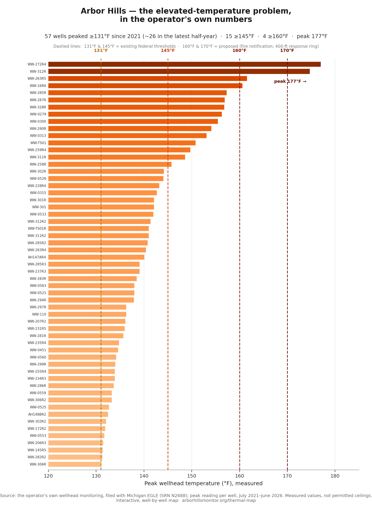
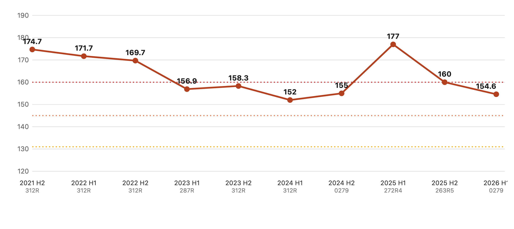

Proposed Minimum Siting Protections
Three elevated-temperature protections a neighboring resident is asking the Washtenaw County Materials Management Planning Committee to write into the minimum landfill siting criteria for the county's Materials Management Plan. Every number below is drawn from the public record and is sourced.
The three protections
1. Continuous wellhead monitoring, alerting, and public data
Before placing waste in any new or expanded cell, install and continuously operate wellhead monitoring for temperature, oxygen, methane, and carbon dioxide across the gas-collection field (with carbon monoxide measured to confirm a subsurface reaction). Automatically notify the County and the state within 30 minutes of a reading at or above 145°F or of an oxidation signature. If a confirmed reading reaches 160°F, immediately notify the fire departments responsible for this site — Salem Township (primary jurisdiction) and, by automatic mutual aid, the City of Novi, together with the regional mutual-aid network they draw on — and the public health departments of all three bordering counties (Oakland, Washtenaw, and Wayne). Make the data publicly accessible in as close to real time as the method allows.
2. Corrective action and fire response
For any reading at or above 145°F, and regardless of any higher operating value a well holds, begin corrective action within 5 days, complete a root-cause analysis if not back below 145°F within 15 days, and monitor at least weekly until corrected, reporting each action publicly. For any reading at or above 170°F, cease waste placement and non-essential activity within 400 feet of the well until it is corrected, and require an approved Incident Action Plan before anyone approaches that wellhead.
3. Required SET and Smolder-Prevention Plans
Two written, professional-engineer-certified, publicly available plans, reviewed at least annually and every four months whenever any well is at or above 160°F:
- A Subsurface Elevated-Temperature (SET) Monitoring & Management Plan — classify each event, monitor in-situ temperature/oxygen/methane/CO/CO₂ at a density of at least one point per 2 acres of the affected area plus a leading-edge sentry line, with tiered action thresholds and public reporting.
- A Smolder / Fire Prevention & Response Plan — sensitive-receptor inventory (nearest homes and Salem and Ridge Wood elementary schools), prevention, a tiered response toolbox, and a named notification chain (Salem Township FD; its automatic-mutual-aid partner the City of Novi; the regional mutual-aid network Salem can call, including Superior Township and the Northville departments; and the public health departments of the three bordering counties — Oakland, Washtenaw, and Wayne). Salem Township's own department is staffed by paid-on-call members who hold outside jobs, per the department's own description — not full-time career firefighters — so its mutual-aid partners must be named in advance, not assumed.
Why these protections — the record
The operator's own wellhead monitoring, filed with Michigan EGLE (SRN N2688), shows a persistent elevated-temperature condition. 57 wells have peaked at or above the 131°F elevated-temperature threshold since 2021 — about 26 in the most recent half-year; over that period, 15 have reached 145°F and 4 have reached 160°F; the measured peak is 177°F.



Why this is the committee's decision to make
These protections are not a favor to ask for. Michigan law requires the county's plan to set siting criteria, and it gives the committee room to set them above the state minimum:
- The plan must include minimum siting criteria. A Materials Management Plan “shall include a siting process with a set of minimum criteria” (MCL 324.11579(1)). Writing them is the plan's job, not a discretionary add-on.
- Minimum criteria cannot be waived. A facility is consistent with the plan only if it meets the minimum criteria (MCL 324.11585(3)(b)); a host-community agreement can trade away only the supplemental criteria (3)(c), never these. That is why every load-bearing protection belongs in the minimum tier.
- Criteria can be tailored to landfills, and written to bind. EGLE's own siting guidance recognizes that the siting process and criteria may differ by facility type, so landfill-specific protections are contemplated by the framework. And under MCL 324.11583, a local rule that regulates a facility's location or development is enforceable only if it is written into, and consistent with, the plan — while any local rule that conflicts with Part 115 is unenforceable regardless. So writing these protections into the plan's minimum criteria is the necessary first step to make them enforceable.
- The state still enforces. EGLE independently evaluates whether a facility is consistent with the plan as part of its permit review, and the applicant must document that consistency (MCL 324.11585(5)). A protection written into the plan's minimum criteria therefore carries state enforcement at the permit stage — it is not merely aspirational.
The committee heard the same point in its own materials. The county's August 19, 2026 briefing packet noted that state rules “set the floor,” with “the county layer … on top of these, generally more protective,” and that the 2022 update to Part 115 “explicitly prioritized local control of facility siting and regulation of landfill development, reinforcing that county MMP criteria can and should be more stringent than the state baseline where local conditions and community values warrant it.” The persistent elevated-temperature condition documented here — beside homes and two elementary schools — is exactly the kind of local condition that a county's minimum siting criteria exist to address.
A model advancing into law
California's AB 28 (2026) — which passed the Legislature in August 2026 and, as of September 2026, is awaiting the Governor's signature — would define a landfill “subsurface elevated temperature event” as subsurface gas or waste temperatures that persistently exceed 131°F over a substantial area and meet additional performance criteria set by the state agency, triggering monitoring and corrective-action requirements. Independent academic and federal (U.S. EPA) researchers publish extensively on elevated-temperature landfills; the committee can engage them directly.